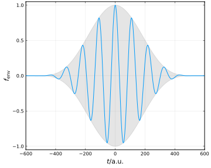
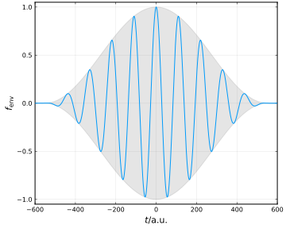

Lasers
This section provides information of available lasers in the library.
In this section we list available lasers implemented in the Lasers module of the library.
SemiclassicalSFI.Lasers — ModuleThe Lasers module provides information about laser fields.
Basic Properties of Monochromatic Lasers
A monochromatic laser is composed of the carrier wave $\cos{(\omega t+\phi)}$ and the envelope $f_{\mathrm{env}}(t)$. Given the amplitude of the vector potential $A_0$, the time-dependent vector potential of the laser, which we assume to propagate in $z$ direction and have $x$ axis as the principle axis of polarization, reads
\[\bm{A}(t) = A_0 f_{\mathrm{env}}(t) \left[ \cos{(\omega t+\phi)} \bm{e}_x + \varepsilon \sin{(\omega t+\phi)} \bm{e}_y \right],\]
where $\varepsilon$ is the ellipticity.
List of Available Properties
Currently the monochromatic lasers implemented in the library include Cos4Laser, Cos2Laser, GaussianLaser and TrapezoidalLaser.
The available properties of the laser fields are listed below. To obtain a property of the laser field, invoke the property as a method and pass the laser object as an argument. The following shows an example.
julia> l = Cos4Laser(peak_int=1e14, wave_len=800.0, cyc_num=10, ellip=0)[MonochromaticLaser] Envelope cos⁴, Wavelength=800.0 nm, 10 cycle(s), ε=0 [Linearly polarized], PrincipleAxisAzimuth=0.0°julia> LaserA0(l)0.9372492077964156julia> Ax = LaserAx(l)#5 (generic function with 1 method)julia> Ax(0.0)0.9372492077964156
Cos4Laser | Cos2Laser | GaussianLaser | TrapezoidalLaser | |
|---|---|---|---|---|
PeakInt | ✔ | ✔ | ✔ | ✔ |
WaveLen | ✔ | ✔ | ✔ | ✔ |
CycNum | ✔ | ✔ | ||
SpreadCycNum | ✔ | |||
SpreadDuration | ✔ | |||
FWHM_Duration | ✔ | |||
CycNumTotal | ✔ | |||
CycNumTurnOn | ✔ | |||
CycNumTurnOff | ✔ | |||
CycNumConst | ✔ | |||
Ellipticity | ✔ | ✔ | ✔ | ✔ |
Azimuth | ✔ | ✔ | ✔ | ✔ |
AngFreq | ✔ | ✔ | ✔ | ✔ |
Period | ✔ | ✔ | ✔ | ✔ |
CEP | ✔ | ✔ | ✔ | ✔ |
TimeShift | ✔ | ✔ | ✔ | ✔ |
LaserF0 | ✔ | ✔ | ✔ | ✔ |
LaserA0 | ✔ | ✔ | ✔ | ✔ |
LaserFx | ✔ | ✔ | ✔ | ✔ |
LaserFy | ✔ | ✔ | ✔ | ✔ |
LaserAx | ✔ | ✔ | ✔ | ✔ |
LaserAy | ✔ | ✔ | ✔ | ✔ |
Ellipticity
The ellipticity $\varepsilon$ defines the polarization type of the laser field. For special cases, 0 indicates linear polarization and ±1 indicates circular polarization. The electric field rotates clockwise for positive ellipticities and counter-clockwise for negative ones.

Azimuth of Principle Axis
The azimuth angle $\varphi$ of the principle axis defines a clockwise rotation of the laser field in the polarization plane.

Carrier-Envelope-Phase (CEP)
The carrier-envelope-phase (CEP) $\phi$ is the difference between the optical phase of the carrier wave and the envelope position. For few-cycle laser pulses, the influence of the CEP to the laser-matter interaction becomes significant.

Cos⁴-envelope Laser
A Cos4Laser has a cos⁴-shaped-envelope:
\[f_{\mathrm{env}}(t) = \begin{cases} \cos^4{\left[ \omega (t-t_0)/2N \right]}, & -NT/2 \leq t-t_0 \leq NT/2, \\ 0, & \mathrm{otherwise,} \\ \end{cases}\]
where $\omega$ is the angular frequency of the laser field, $N$ is the cycle number, $T$ the period, and $t_0$ denotes the peak time (corresponding to the time_shift in the constructor method).
For the detailed usage, cf. the documentation of Cos4Laser.
SemiclassicalSFI.Lasers.Cos4Laser — Typestruct Cos4Laser <: MonochromaticLaserRepresents a monochromatic elliptically polarized laser field with Cos4-shape envelope propagating in z direction.
An instance of Cos4Laser can be initialized via the constructor method:
Cos4Laser(peak_int, wave_len|ang_freq, cyc_num|duration, ellip, azi=0.0, cep=0.0, t_shift=0.0)Parameters
peak_int: Peak intensity of the laser field (in W/cm²).wave_len: Wave length of the laser field (in nm). Must specify eitherwave_lenorang_freq.ang_freq: Angular frequency of the laser field (in a.u.). Must specify eitherwave_lenorang_freq.cyc_num: Number of cycles of the laser field. Must specify eithercyc_numorduration.duration: Duration of the laser field (in a.u.). Must specify eithercyc_numorduration.ellip: Ellipticity of the laser field [-1≤ε≤1, 0 indicates linear polarization and ±1 indicates circular polarization].azi: Azimuth angle of the laser's polarization's principle axis relative to x axis (in radians) (optional, default 0).cep: Carrier-Envelope-Phase of the laser field (optional, default 0).t_shift: Time shift of the laser (in a.u.) relative to the peak (optional, default 0).
The following shows an example of Cos4Laser and its envelope shape.
julia> Cos4Laser(peak_int=1e14, wave_len=800.0, cyc_num=10, ellip=0)[MonochromaticLaser] Envelope cos⁴, Wavelength=800.0 nm, 10 cycle(s), ε=0 [Linearly polarized], PrincipleAxisAzimuth=0.0°

Cos²-envelope Laser
A Cos2Laser has a cos²-shaped-envelope, similiar with the Cos4Laser:
\[f_{\mathrm{env}}(t) = \begin{cases} \cos^2{\left[ \omega (t-t_0)/2N \right]}, & -NT/2 \leq t-t_0 \leq NT/2, \\ 0, & \mathrm{otherwise.} \\ \end{cases}\]
For the detailed usage, cf. the documentation of Cos2Laser.
SemiclassicalSFI.Lasers.Cos2Laser — Typestruct Cos2Laser <: MonochromaticLaserRepresents a monochromatic elliptically polarized laser field with Cos2-shape envelope propagating in z direction.
An instance of Cos2Laser can be initialized via the constructor method:
Cos2Laser(peak_int, wave_len|ang_freq, cyc_num|duration, ellip, azi=0.0, cep=0.0, t_shift=0.0)Parameters
peak_int: Peak intensity of the laser field (in W/cm²).wave_len: Wave length of the laser field (in nm). Must specify eitherwave_lenorang_freq.ang_freq: Angular frequency of the laser field (in a.u.). Must specify eitherwave_lenorang_freq.cyc_num: Number of cycles of the laser field. Must specify eithercyc_numorduration.duration: Duration of the laser field (in a.u.). Must specify eithercyc_numorduration.ellip: Ellipticity of the laser field [-1≤ε≤1, 0 indicates linear polarization and ±1 indicates circular polarization].azi: Azimuth angle of the laser's polarization's principle axis relative to x axis (in radians) (optional, default 0).cep: Carrier-Envelope-Phase of the laser field (optional, default 0).t_shift: Time shift of the laser (in a.u.) relative to the peak (optional, default 0).
The following shows an example of Cos2Laser and its envelope shape.
julia> Cos2Laser(peak_int=1e14, wave_len=800.0, cyc_num=10, ellip=0)[MonochromaticLaser] Envelope cos², Wavelength=800.0 nm, 10 cycle(s), ε=0 [Linearly polarized], PrincipleAxisAzimuth=0.0°

Gaussian-envelope Laser
A GaussianLaser has a Gaussian-shaped-envelope:
\[f_{\mathrm{env}}(t) = \exp{\left[ -(t-t_0)^2/\sigma^2 \right]} = \exp{\left[ -8\ln{2}(t-t_0)^2/\tau_{\mathrm{FWHM}}^2 \right]},\]
where $\sigma$ is the temporal width of the laser (relating to the spread_duration in the constructor method) and $\tau_{\mathrm{FWHM}}=2\sqrt{2\ln{2}}\sigma$ denotes the laser's temporal FWHM (Full-Width at Half Maximum).
For the detailed usage, cf. the documentation of GaussianLaser.
SemiclassicalSFI.Lasers.GaussianLaser — Typestruct GaussianLaser <: MonochromaticLaserRepresents a monochromatic elliptically polarized laser field with Gaussian-shape envelope propagating in z direction.
An instance of GaussianLaser can be initialized via the constructor method:
GaussianLaser(peak_int, wave_len|ang_freq, spread_cyc_num|spread_duration|FWHM_duration, ellip, azi=0., cep=0., t_shift=0.)Parameters
peak_int: Peak intensity of the laser field (in W/cm²).wave_len: Wave length of the laser field (in nm). Must specify eitherwave_lenorang_freq.ang_freq: Angular frequency of the laser field (in a.u.). Must specify eitherwave_lenorang_freq.spread_cyc_num: Temporal width (converting to cycle numbers) of the laser field (in a.u.), namely σ. Must specify one inspread_cyc_num,spread_durationandFWHM_duration.spread_duration: Temporal width of the laser field (in a.u.). Must specify one inspread_cyc_num,spread_durationandFWHM_duration.FWHM_duration: Temporal FWHM (Full Width at Half Maximum) of the laser field (in a.u.). Must specify one inspread_cyc_num,spread_durationandFWHM_duration.ellip: Ellipticity of the laser field [-1≤ε≤1, 0 indicates linear polarization and ±1 indicates circular polarization].azi: Azimuth angle of the laser's polarization's principle axis relative to x axis (in radians) (optional, default 0).cep: Carrier-Envelope-Phase of the laser field (optional, default 0).t_shift: Time shift of the laser (in a.u.) relative to the peak (optional, default 0).
An example of GaussianLaser and its envelope shape are shown as follows.
julia> GaussianLaser(peak_int=1e14, wave_len=800.0, FWHM_duration=1103.2, ellip=0)[MonochromaticLaser] Envelope Gaussian, Wavelength=800.0 nm, Temporal width 4.24660968137623 cycle(s) [FWHM 26.686408000000007 fs], ε=0 [Linearly polarized], PrincipleAxisAzimuth=0.0°

Trapezoidal-envelope Laser
A TrapezoidalLaser has a trapezoidal-shaped-envelope:
\[f_{\mathrm{env}}(t) = \begin{cases} (t-t_0) / N_{\mathrm{on}}T, & 0 < t-t_0 \leq N_{\mathrm{on}}T, \\ 1, & N_{\mathrm{on}}T < t-t_0 \leq (N_{\mathrm{on}}+N_{\mathrm{const}})T, \\ 1-[t-t_0-(N_{\mathrm{on}}+N_{\mathrm{const}})T] / N_{\mathrm{off}}T, & (N_{\mathrm{on}}+N_{\mathrm{const}})T < t-t_0 \leq (N_{\mathrm{on}}+N_{\mathrm{const}}+N_{\mathrm{off}})T, \\ 0, & \mathrm{otherwise.} \end{cases}\]
where $N_{\mathrm{on}}, N_{\mathrm{const}}, N_{\mathrm{off}}$ are cycle numbers during the turn-on, constant, and turn-off stages. Note that for the TrapezoidalLaser, the $t_0$ denotes the time of rise instead of time of peak, in contrast to the previous lasers.
For the detailed usage, cf. the documentation of TrapezoidalLaser.
SemiclassicalSFI.Lasers.TrapezoidalLaser — Typestruct TrapezoidalLaser <: MonochromaticLaserRepresents a monochromatic elliptically polarized laser field with Trapezoidal-shape envelope propagating in z direction.
An instance of TrapezoidalLaser can be initialized via the constructor method:
TrapezoidalLaser(peak_int, wave_len|ang_freq, cyc_num_turn_on, cyc_num_turn_off, cyc_num_const, ellip, azi=0.0, cep=0.0, t_shift=0.0)Parameters
peak_int: Peak intensity of the laser field (in W/cm²).wave_len: Wavelength of the laser field (in nm). Must specify eitherwave_lenorang_freq.ang_freq: Angular frequency of the laser field (in a.u.). Must specify eitherwave_lenorang_freq.cyc_num_turn_on: Number of cycles of the laser field in the turn-on stage.cyc_num_turn_off: Number of cycles of the laser field in the turn-off stage.cyc_num_const: Number of cycles of the laser field in the constant-intensity stage.ellip: Ellipticity of the laser field [-1≤ε≤1, 0 indicates linear polarization and ±1 indicates circular polarization].azi: Azimuth angle of the laser's polarization's principle axis relative to x axis (in radians) (optional, default 0).t_shift: Time shift of the laser (in a.u.) relative to the beginning of TURN-ON (optional, default 0).
In the following is an example of TrapezoidalLaser and its envelope shape.
julia> l = TrapezoidalLaser( peak_int=1e14, wave_len=800.0, cyc_num_turn_on=3, cyc_num_turn_off=3, cyc_num_const=4, ellip=0, t_shift=-551.6)[MonochromaticLaser] Envelope Trapezoidal, Wavelength=800.0 nm, TurnOn/Constant/TurnOff: 3/4/3 cycle(s), ε=0 [Linearly polarized], PrincipleAxisAzimuth=0.0°, Rises at t₀=-551.6 a.u.